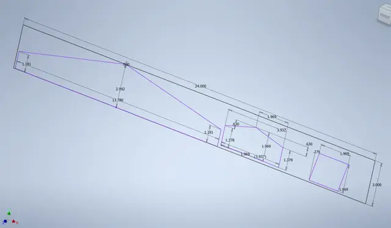
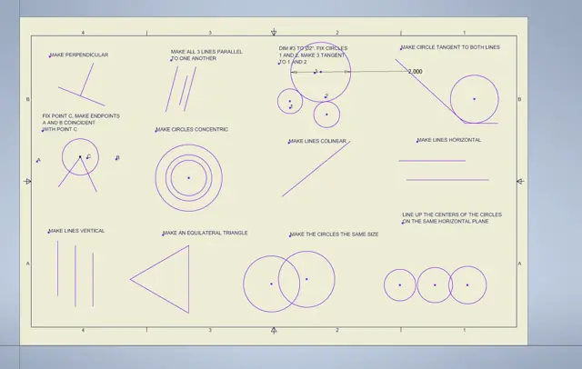

CAD Modeling
Project Goal
Build CAD skills in Autodesk Inventor, from constraint-driven 2D sketches to 3D parts used in real engineering analysis.
What I Built
Constraint practice sheets, dimensioned part sketches, a NACA 23018 wing section modeled from coordinate data, and four rocket nose cones used for aerodynamic comparison in my Applied Aerospace Engineering class.
Photos & Visuals




Build Process
- Learn sketch constraints. Practiced the geometric constraints that make a sketch fully defined: perpendicular, parallel, tangent, concentric, collinear, and equal.
- Dimension parts. Drew fully dimensioned part sketches before turning them into 3D features.
- Model from data. Built the NACA 23018 wing section directly from scaled airfoil coordinates.
- Model for analysis. Revolved four nose-cone profiles (secant ogive, tangent ogive, ellipsoidal, conical) and exported them for MATLAB pressure and drag analysis.
My Role
All of the models on this page are my own individual coursework in Autodesk Inventor.
Key Problem Solved
Creating geometry accurate enough to analyze. A wing or nose cone is only useful in a simulation if the model matches the real profile, so the models start from exact dimensions and coordinate data.
What I Learned
Fully constrained sketching, dimensioning, building 3D features from coordinate data, revolve and extrude operations, and preparing models for 3D printing (STL) and analysis.